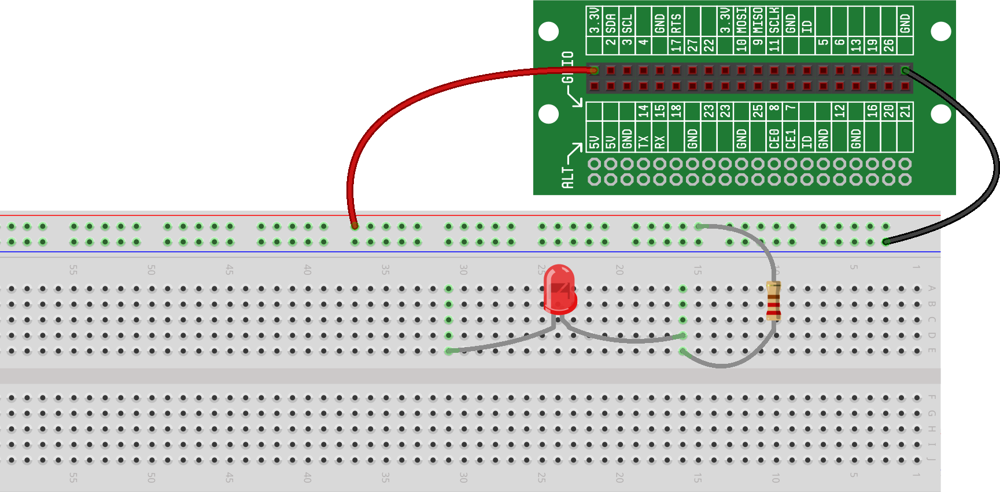

In this project, we'll learn about General Purpose Input/Outputs (GPIOs) and
for the first time, we'll use software to control the hardware. Specifically,
we'll wire an LED and then control
the LED output using code that we'll write.
Before jumping into this project, we very strongly recommend that you
read
, as these
concepts will be the basis for this project and nearly all future RaspberrySTEM
projects.
In the previous project, we created a circuit that allowed us to control an LED using a
pushbutton -- solely using hardware. But, the most fun and exciting part
of the RaspberrySTEM CREATOR Kit is the integration of the software and hardware,
and more specifically, using software to control the hardware to make it do
interesting and useful things.
In this project, we'll rebuild a version of our original circuit (with just the power
source, LED and resistor), but we'll the wire up LED a little differently and then write
some code to control it -- harnessing the Raspberry Pi GPIOs.
Controlling an LED with a GPIO
Before we start the new wiring for this project, let's wire up our original circuit
from the project --
this will give us some context so we can understand how we're going from that circuit (which
uses strictly hardware to control the LED) to our new circuit (which uses a GPIO to control
the LED). As a reminder here is what that circuit looks like, and how you'll want to wire
your breadboard right now:

The LED should now be lit.
Now that we have some background on how GPIOs work and how we can control our LED with
a GPIO, and now that we've wired up a circuit that
we're familiar with, let's jump in and start using GPIOs...
Step #1: Disconnect the circuit from ground.
The LED is currently connected to ground via the green wire. To disconnect it,
remove the green wire:

The LED should no longer be lit.
Step #2: Connect the circuit to a GPIO.
Now, connect a wire from the LED to a GPIO as shown in the diagram.
For this project, we will assume that you’re using GPIO14
on the Lid Connector Board, though you’re welcome to use any GPIO -- just remember that
you’ll just need to modify the code appropriately if you choose a
GPIO other than 14 for this project.
This is what your breadboard should now look like:

Inner Workings of GPIOs
You will probably notice that the LED is not lit at this
point, even though we've hooked it up to the GPIO. The reason
for this is that the GPIO, by default, reads a high voltage.
As we discussed above, if the GPIO voltage is high, there is
no voltage difference across the LED, and as a result no
electric current will flow -- the LED will not light up.
The code we're about to write will set the GPIO voltage low (ground, 0V).
When the GPIO is low, current can flow through the LED, because
there is now a voltage difference
across the LED.
These concepts can be a bit confusing at first, but as you use
GPIOs more and more, the concepts and the conventions should become
clearer.
Now that our circuit is complete, let’s write the software.
Step #1: Write the code.
The code to control the GPIO (and with it the LED) is pretty
short. It uses a function called Output() to configure a GPIO as an output.
Type (or cut-and-paste) the following code into the your RDE’s Code
Window:
At this point, we don't expect you'll fully understand the code above. However, there are a couple important ideas to notice in the code:
To help you understand how we wrote this code, take some time to refer to the
new concepts introduced in this section (see the header at the top of the
page). We'll look at this code again in more detail in upcoming projects.
Step #2: Run the code.
Run the code the same way you did in the project – press
the Play icon above the code window. Assuming you did everything correctly, the
LED should now be lit.
Congratulations! You just controlled some hardware you built using
software that you wrote.
Step #3: Play around with it.
Assuming everything worked properly in the previous step, feel free
to play around with the circuit and the code. Try changing from
GPIO14 to a different GPIO (make sure you change the code to reflect
the new GPIO). Or try turning off the LED by replacing the my_led.on()
statement with: